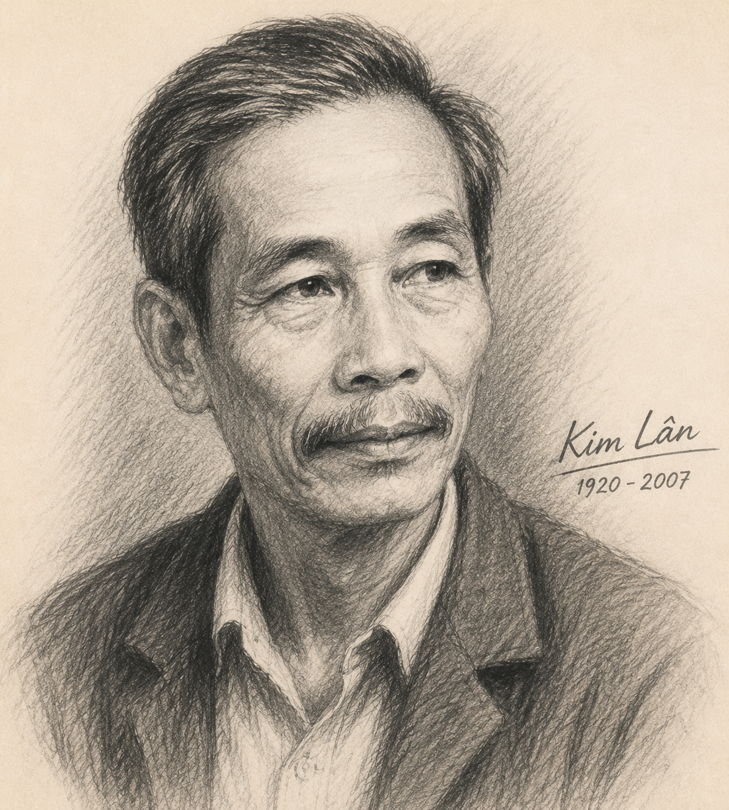
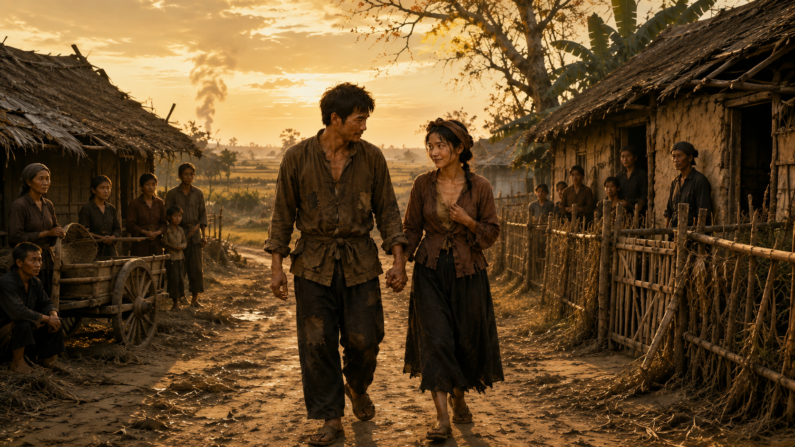

"Bạn biết gì về nạn đói năm Ất Dậu (1945) xảy ra ở Việt Nam? Theo bạn, có phải lúc nào nghịch cảnh trong đời sống (như nạn đói, thiên tai, chiến tranh, dịch bệnh,...) cũng chỉ đẩy con người vào tình thế bi quan, tuyệt vọng hay không? Vì sao?"
Tên khai sinh: Nguyễn Văn Tài, quê ở huyện Từ Sơn, tỉnh Bắc Ninh.
Đề tài sáng tác: Am hiểu sâu sắc về nông thôn và người nông dân Bắc Bộ. Tác phẩm của ông không đồ sộ nhưng đạt đến đỉnh cao của nghệ thuật truyện ngắn hiện đại.
Tác phẩm chính: Tập truyện ngắn Nên vợ nên chồng (1955), Con chó xấu xí (1962). Ông được trao Giải thưởng Nhà nước về Văn học nghệ thuật năm 2001.

Hình 1 (h1.png): Nhà văn Kim LânNguồn gốc & Tuyên ngôn nghệ thuật của Kim Lân:
Nạn đói tràn đến xóm ngụ cư: người sống xanh xám như những bóng ma, người chết như ngả rạ, không khí bốc mùi ẩm thối rác rưởi và mùi gây xác người, tiếng quạ gào lên từng hồi thê thiết.
Giữa bối cảnh u uất ấy, Tràng - một gã xóm ngụ cư nghèo thô kệch - bất ngờ dẫn một người phụ nữ lạ về làm vợ. Sự việc khiến cả xóm ngụ cư ngạc nhiên, vừa xót xa lo lắng vừa nhen nhóm một luồng khí tươi mát lạ kỳ.
Khung cảnh ngày đói được gợi ra qua những hình ảnh và cảm giác nào?
Người dân trong xóm nghĩ và bàn luận gì khi thấy Tràng dẫn một người phụ nữ lạ về nhà?
Lần 1: Tràng hò một câu bâng quơ khi đẩy xe bò thóc: "Muốn ăn cơm trắng mấy giò này / Lại đây mà đẩy xe bò với anh, nì!". Thị vùng đứng dậy đẩy xe, liếc mắt cười tình tứ.
Lần 2: Thị sầm sập đến đòi ăn vì Tràng "điêu". Thấy thị rách rưới xám xịt, Tràng mời ăn. Thị cắm đầu ăn liền bốn bát bánh đúc. Tràng đùa: "Có về với tớ thì ra khuẩn hàng lên xe rồi cùng về". Thị theo về thật!

Hình 2 (h2.png): Tràng đưa người vợ nhặt về nhàViệc Tràng chấp nhận hành động "theo về" của một người phụ nữ xa lạ thể hiện nét tính cách gì của nhân vật?
Chú ý hình thức lời văn và ngôn từ được tác giả sử dụng để thể hiện tâm trạng bà cụ Tứ khi chấp nhận nàng dâu?
Khung cảnh sáng hôm sau: Sân vườn quét tước gọn gàng, ang nước kín đầy. Tràng thấy mình "nên người", có trách nhiệm xây dựng tổ ấm. Người vợ trở nên hiền hậu đúng mực, bà cụ Tứ xăm xắn rạng rỡ.
Bữa cơm ngày đói & Nồi chè khoán: Giữa mẹt rách chỉ có rau chuối thái rối, đĩa muối và nồi chè khoán (thực chất là cám đắng chát). Dù cay đắng nhưng cả nhà vẫn cố giấu tủi hờn để mang lại sinh khí cho nhau.
Tiếng trống thúc thuế & Ánh sáng Cách mạng: Tiếng trống thúc thuế dồn dập vọng đến. Thị kể chuyện mạn Thái Nguyên, Bắc Giang phá kho thóc Nhật. Trong óc Tràng hiện lên cảnh đoàn người đi trên đê Sộp và **lá cờ đỏ bay phấp phới**.
Hình ảnh "lá cờ đỏ" hiện lên trong tâm trí của Tràng có ý nghĩa gì?
Tình huống truyện *Vợ nhặt* là một sáng tạo nghệ thuật độc đáo: Tràng "nhặt" được vợ trong hoàn cảnh đói khát bế tắc nhất, tạo nên sự dội đâm giữa cái chết cay đắng và sức sống hạnh phúc.
Tên tác phẩm *Vợ nhặt* ngụ ý giá trị con người bị rẻ khinh như rác rưởi (có thể "nhặt" được ở ngã ba đường), nhưng đồng thời khẳng định khát vọng sống chân thành quý giá của con người.
Vận dụng tri thức phân tích điểm nhìn trần thuật để so sánh tính nhân văn trong *Vợ nhặt* (Kim Lân) với bi kịch cự tuyệt trong *Chí Phèo* (Nam Cao).
| Phương diện | Đặc điểm biểu hiện | Tác dụng nghệ thuật |
|---|---|---|
| Tình huống truyện | Tràng nghèo xóm ngụ cư "nhặt" được vợ chỉ bằng 4 bát bánh đúc và vài câu hò đùa | Bộc lộ bản chất tình người, làm nổi bật sức sống mãnh liệt của con người nghèo khổ |
| Điểm nhìn & Giọng điệu | Điểm nhìn luân chuyển giữa Tràng, Thị và Bà cụ Tứ; giọng điệu hóm hỉnh mà xót xa | Diễn tả tinh tế diễn biến tâm lý hồi sinh, tạo độ chân thực lắng đọng cho thiên truyện |
| Chi tiết nghệ thuật | Nồi chè khoán (cám đắng), tiếng trống thúc thuế, lá cờ đỏ phấp phới | Đỉnh cao hiện thực và nhân đạo: Vừa xót xa thực tại vừa hướng tới tương lai Cách mạng |
Thử sức với 10 câu hỏi trắc nghiệm củng cố bài học!
Yêu cầu: Nhan đề "Vợ nhặt" có quan hệ thế nào với nội dung? Xác định tình huống truyện và nêu ý nghĩa.
Lời giải chi tiết:
Yêu cầu: Phân tích sự biến đổi của Tràng, người vợ nhặt, bà cụ Tứ và nghệ thuật điểm nhìn trần thuật.
Lời giải chi tiết:
Yêu cầu: Phân tích quan điểm về tính chất "cổ tích" trong bối cảnh hiện thực nghiệt ngã của thiên truyện.
Lời giải chi tiết:
Có thể coi Vợ nhặt là một "câu chuyện cổ tích hiện thực":
Yêu cầu: Viết đoạn văn trình bày suy nghĩ về một thông điệp có ý nghĩa nhất với bản thân rút ra từ truyện ngắn Vợ nhặt.
Đoạn văn tham khảo mẫu:
Truyện ngắn *Vợ nhặt* của Kim Lân gửi gắm một thông điệp nhân văn sâu sắc: Dù rơi vào hoàn cảnh khốn cùng hay đối mặt với ranh giới của sự sống và cái chết, con người vẫn luôn khao khát hạnh phúc, đùm bọc lẫn nhau và giữ vững niềm tin vào tương lai. Giữa bóng tối thê thảm của nạn đói năm 1945, quyết định đưa người phụ nữ xa lạ về làm vợ của Tràng cùng tình thương bao dung của bà cụ Tứ đã chứng minh rằng tình người ấm áp chính là sức mạnh kì diệu nhất. Món quà lớn nhất mà Kim Lân trao tặng độc giả không phải là sự bi lụy, mà là ánh sáng hướng thiện bất diệt. Bài học ấy nhắc nhở chúng ta hôm nay phải biết trân trọng cuộc sống, lan tỏa lòng nhân ái và luôn giữ vững niềm hi vọng trước mọi biến cố nghịch cảnh trong cuộc đời.